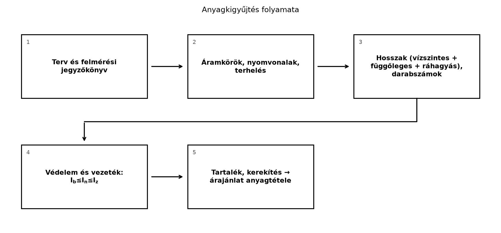

A felmérés során felvett helyiségek és nyomvonalak önmagukban még nem elegendők a munkához. Az anyag- és eszközkiválasztás dönti el, hogy a kivitelezés időben elkészül, a beépített anyag a helyén marad, és a végső ár sem száll el. Ebben az alfejezetben a terv és a felmérési jegyzőkönyv alapján elkészítjük az anyagkigyűjtést, kiválasztjuk a szerelvényeket, védelmeket és vezetékeket, majd árajánlatot állítunk össze.
Tipikus lakásfelújítási helyzet: a tulajdonos kéri, hogy a konyhába kerüljön három új aljzat, a fürdőszobába tükörvilágítás, a hálószobába pedig két váltókapcsolós lámpakapcsolás. A szerelő felméri a nyomvonalakat, kiválasztja a szerelési módot, majd anyagot rendel. Ha itt hibázik – például nem számolja fel a függőleges falszakaszokat, vagy a szerelvény IP-védettsége nem megfelelő –, akkor vagy a munka áll le, vagy a kész szerelés nem lesz szabványos. Az anyagkigyűjtés ezért nem papírmunka, hanem a hibamentes kivitelezés első műszaki lépése.
A tervből kigyűjtött anyagokból lesz az árajánlat anyagköltség-része. A hibás árajánlat pedig később félreértés, vita vagy a vállalkozó saját vesztesége lesz. A fejezet módszerét később a Vállalkozási formák, gazdálkodás, árajánlat és számla alfejezetben fogjuk továbbvinni.
Definíció. Az anyagkigyűjtés az a folyamat, amelynek során a villamos tervből, a felmérési jegyzőkönyvből és a helyszíni megállapodásból összeállítjuk a szükséges anyagok és eszközök tételes, mennyiséggel, típussal és beépítési helyükkel ellátott jegyzékét.
A jó anyagkigyűjtés nem egyszerűen a tervrajzon látható jelek megszámlálása. A kivitelezés során olyan anyagokra is szükség van, amelyek a kapcsolási rajzon nem láthatók önállóan: kötődobozok, rögzítők, dugaszoló csatlakozók, szigetelőszalag, csavarzatok, bilincsek, tömítések, sorkapcsok, feliratok, kábeltálcák vagy védőcsövek. Ezeket gyakran segédanyagként vagy kiegészítő anyagként külön sorban kell felsorolni.
Szabály. Az anyagkigyűjtést mindig két részre kell bontani: a fő anyagok (vezetékek, szerelvények, védelmek, elosztók) és a segédanyagok (kötődobozok, csavarok, tiplik, rögzítő elemek, jelölők, kábelszerelési apróságok) csoportjára. A fő anyagokból pontos darabot és hosszt kell megállapítani, a segédanyagoknál pedig tételenként becslés, darab vagy csomagolási egység alapján adunk mennyiséget.
Mennyiségszámítás vezetékeknél. A vezetékhossz nem egyenlő a tervrajzon vonalzóval kimért hosszal. A falban, védőcsőben vagy kábelcsatornában futó vezetékeknek a nyomvonal hosszán túl szükségük van szerelési ráhagyásra is. Vezetékhossz-számításnál ezért a következő képletet használjuk:
Ahol: - a nyomvonal vízszintes szakaszainak összege, - a szerelési magasságok miatt szükséges függőleges fel- és levezetések összege, - a bekötési pontok, kötődobozok, szerelvénydobozok száma, - az egy pontra jutó bekötési ráhagyás, jellemzően 0,2–0,5 m, - a veszteségi és tartalék százalék, vezetékeknél jellemzően 5–10%.
Megjegyzés. A tervrajzok általában a vízszintes nyomvonalat mutatják, a függőleges szakaszokat nem mindig. A szerelőnek a szerelési magasságokból kell kiszámítania ezeket. Például a padló felett 0,4 m-re szerelt aljzathoz a padlóhoz közeli vízszintes sávból fel kell menni; ez a szakasz anyagigényt és munkát is jelent.
Az anyagkigyűjtés lépéseit az alábbi folyamatábra mutatja.

Eljárás. Anyagkigyűjtés a tervből.
Szabály. Szerelvény kiválasztásakor négy kérdést kötelező tisztázni:
Névleges adatok. A lakásvilágítási kapcsolók jellemzően 10 A névleges áramúak, az aljzatok 16 A-esek, a dugaszoló aljzatok feszültsége 230 V. A nagyobb fogyasztókhoz – villanytűzhely, sütő, mosógép – 16 A-es vagy célirányosabb csatlakozási pont kell. Ipari dugaszoló aljzatoknál 16, 32, 63 vagy 125 A névleges áram és 230/400 V feszültség is szóba jöhet. A készülék névleges árama nem lehet kisebb, mint a tartós üzemi áram, de a védelmi koordinációt is vizsgálni kell.
Szabvány. A villamos szerelvények és készülékek burkolatvédettségét az MSZ EN 60529 szerint IP-kóddal adjuk meg. Az IP-kód első számjegye a szilárd tárgyak és por, a második számjegye a víz behatolása elleni védelemre utal. Például az IP44-es szerelvény védett 1 mm-nél nagyobb szilárd anyag ellen, és minden irányból érkező fröccsenő víz ellen is védett. A konkrét helyiségekben megkívánt IP-fokozatot az adott létesítési előírás és az MSZ HD 60364 sorozat szerint kell meghatározni. (ellenőrizendő: az aktuális szabványkiadás és a helyiségzónákra vonatkozó követelmények.)
Tipikus IP-választás a gyakorlatban:
| Beépítési hely | Gyakori IP-kód | Indoklás |
|---|---|---|
| Száraz lakószoba aljzata | IP20 vagy IP21 | normál belső tér, nem zavaró por |
| Fürdőszoba, zuhanyzó melletti zóna | IP44 vagy magasabb | vízpermet, pára |
| Kültéri lámpa fedett ereszen | IP44 (poros helyen IP54) | fröccsenő víz; az első 4-es jegy nem porvédelem |
| Kültéri földbe süllyesztett lámpa | IP67 | átmeneti bemerítés |
| Poros műhely, fafeldolgozó | IP54 vagy magasabb | porvédett (5), fröccsenő víz (4); vízsugárnál IPx5 |
A fenti értékek tájékoztató jellegűek; a konkrét létesítési előírás mindig a zónáktól és a gyártói adatlaptól függ. (ellenőrizendő: a helyi előírások és a gyártói adatlapok.)
Szín és sorozat. A szerelvényeknél a szín és a gyártói sorozat is műszaki-kereskedelmi követelmény. A falra szerelhető kapcsolók, aljzatok és keretek sorozata akkor építhető egységesen, ha azonos gyártói családból származnak. A színmegadásnál az ügyfél elvárása mellett a helyi vagy tervezői előírást is figyelembe kell venni; kültéri szerelvényeknél az UV-álló, törtfehér vagy szürke változat gyakran jobb, mint a tiszta fehér.
Vezetékek kiválasztása. A vezetéket a terhelés, a szerelési mód és a környezeti hőmérséklet alapján választjuk ki. Az előző, Terhelhetőség, melegedés és javítótényezők alfejezetben tanult módszerrel:
A kiválasztott vezető terhelhetőségére és a védőszerv névleges áramára teljesülnie kell:
Például egy új aljzatkörnél a réz vezető 2,5 mm²-es, védőcsőben, 30 °C környezetben jellemzően nagyobb terhelhetőségű, mint a 16 A-es kismegszakító, de ezt a konkrét körülményekkel mindig ellenőrizni kell. Villanytűzhelyhez 3×4 mm², 3 fázisú bekötéshez 5×2,5 mm² vagy 5×4 mm² jöhet szóba a kialakítástól függően. (ellenőrizendő: az MSZ HD 60364-5-52 terhelhetőségi táblázatai és a gyártói kábeladatok.)
Védelmek kiválasztása. Lakóépületben az általános aljzat- és világítási körök védelme jellemzően B karakterisztikájú kismegszakító (például B16, B10); C karakterisztikát nagyobb bekapcsolási áramú fogyasztóknál (motor, transzformátor, LED-meghajtók sokasága) választunk, de ekkor a hurokimpedancia-feltételt (Zs ≤ U0/Ia) külön ellenőrizni kell (ellenőrizendő: MSZ HD 60364-4-41, MSZ EN 60898-1); a nagyobb motoros fogyasztókhoz C vagy D karakterisztika választható. Az áram-védőkapcsoló (RCD) névleges differenciaárama lakossági és általános épületvillamossági környezetben 30 mA-es kivitel. A kiválasztáskor ügyelni kell arra is, hogy a kismegszakító és az RCD megszakítóképessége elég legyen a várható zárlati áramhoz. (ellenőrizendő: a konkrét típusok és az MSZ HD 60364 előírásai.)
Kidolgozott példa. Konyhai aljzati és világítási anyagkigyűjtés. Egy konyha-felújításnál a felmérés alapján 6 db süllyesztett dugaszoló aljzatot, 1 db külön tűzhely csatlakozást, 2 db lámpát és 2 db egypólusú kapcsolót kell beépíteni. A szerelés falba süllyesztett, védőcsőben. A vízszintes nyomvonalhosszak:
A függőleges szakasz a vízszintes sáv és a szerelvény magasságának különbsége: . A példában a vízszintes nyomvonal a mennyezet alatti sávban fut (2,6 m belmagasságnál 2,3 m magasan), ezért a függőleges szakaszok:
A bekötési ráhagyást körönként, csatlakozási pontonként 0,3 m-rel számoljuk: aljzatkör 6 × 0,3 = 1,8 m; tűzhelykör 2 × 0,3 = 0,6 m (a tűzhely-csatlakozó és a kötődoboz); világítási kör 4 × 0,3 = 1,2 m. Összesen 12 csatlakozási pont (a felsorolt 11 szerelvény mellett a tűzhelykör kötődobozát is számoljuk). A veszteségi tartalék 10%.
Számítás. Először a kábelhosszak:
A tűzhelykör 9,46 m-es értékét a kábel kiszerelési egységéhez igazodva 10 m-re kerekítjük. A felfelé kerekítés azért szükséges, mert a kábelt nem méterre fogják megvágni a nagykereskedésben, és a túl rövid véghossz miatt toldani kellene, ami többlet hibalehetőség. Az anyagkigyűjtés tehát:
Kidolgozott példa. Árajánlat anyag-, munka-, rezsiköltsége. A konyhai anyagkigyűjtés alapján az anyagköltség nettó 85 000 Ft. A szerelő a munkát 8 munkaórára becsüli, óradíja 6 000 Ft. A szállítási költség 3 000 Ft, a segédanyag az anyagköltség 5%-a, a rezsi a munkadíj 10%-a. Az áfa mértéke 27%. Készítsük el az árajánlat számítását.
Számítás.
A teljes nettó alap összeg:
Az áfa:
A bruttó ajánlati ár:
A szerződésben érdemes az anyag-, a munka- és a szállítási költségeket külön soron feltüntetni, mert a későbbi pótmunkák és az áfa-változások így követhetők. A fenti árak tanulási példák; a tényleges árajánlatnál a mindenkori beszerzési árakat és a hatályos adókulcsot kell használni. (ellenőrizendő: aktuális áfa-mérték és számlázási előírások.)
Definíció. Az árajánlat olyan ajánlati dokumentum, amelyben a villanyszerelő rögzíti a feladat műszaki tartalmát, az anyag- és munkaár tételeit, a feltételeket, a határidőt és a garanciát.
Szabály. Az árajánlatban mindig tüntessük fel:
Az árajánlat nem számla, de később a számla alapja lehet. A pontatlan árajánlat gyakran vezet vitához, mert a tényleges mennyiségek nem azonosak a becsült számokkal. A szerelő ezért az anyagmennyiségeket ne csökkentse szándékosan, hanem a veszteségi tartalékot tüntesse fel, és írjon a pótmunka kezelésére is feltételt.
Szállítás. A kábelek és szerelvények szállításakor ügyelni kell a sérülésmentes átvételre. A kábeldobokat a peremükre állítva, ékekkel kitámasztva, rögzítve szállítjuk és tároljuk; fektetni nem szabad. Letekercseléskor a dobot tengelyen forgatjuk, a kábelt nem húzzuk le oldalirányban, és betartjuk a gyártó szerinti legkisebb hajlítási sugarat (ellenőrizendő: gyártói szállítási útmutató). A szerelvényeket, különösen az érzékeny elektronikus eszközöket, az eredeti csomagolásukban vagy jól párnázott ládában kell mozgatni.
Tárolás. A kábelek tárolása száraz, fagymentes helyen történjen. A szigetelőanyagok hosszú távon melegedésre, UV-sugárzásra és olajos szennyeződésre érzékenyek. A dobozokat és kapcsolókat pormentesen, az építkezésen lehetőleg lezárt helyiségben tároljuk. A fém aljzatok és rögzítők nedvességtől rozsdásodhatnak, ezért a tárolóhely legyen fedett és száraz.
Ellenőrzés. A vételnél ellenőrizni kell a szállítólevél, a típus, a mennyiség, a szín és a gyártói jelölés megegyezését. Az MSZ EN 60529 szerinti IP-védettséget a termék felirata, gyártói katalógus vagy csomagolás tartalmazza. A beépítés előtt legalább vizuális ellenőrzést kell végezni: nincs-e törés, behajlott csatlakozó, hibás menet vagy sérült szigetelés. A hibás vagy eltérő anyagot ne építsük be; sokkal olcsóbb cserélni a raktárban, mint a vakolt falban.
Eljárás. Anyagellenőrzés a beépítés előtt.
Egy családi házban a szerelő a tervrajzon csak a vízszintes falhorony hosszakat nézte, és az árajánlatba kevés kábelt írt be. A szobákban 0,4 m magasságba kerültek az aljzatok, a kapcsolók 1,1 m-re, a mennyezeti lámpák pedig 2,6 m-re; a függőleges szakaszok így összesen több mint 40 m kábelt igényeltek. A kivitelezés közben a megrendelővel kellett jelezni, hogy elfogyott a kábel, és pótanyagot kellett venni. Ez a munka ütemét és az árat is eltolta.
Tanulság. A felmérésből kigyűjtött anyagok csak akkor pontosak, ha a szerelési magasságokat, a függőleges szakaszokat, a kötődobozokra jutó ráhagyásokat és a veszteségi tartalékot is figyelembe veszi. Ugyanez igaz a szerelvényekre: a fürdőszobai aljzatnál nem elegendő az IP20-as beltéri változat, ha a szerelési helyen vízpermet érheti a dobozt.
Cél. Fürdőszobai tükörvilágítás és aljzatkör anyagkigyűjtése, anyagnyilvántartás készítése és árajánlat-tervezet összeállítása.
Eszközök és anyagok. Tervmásolat, felmérési jegyzőkönyv, mérőszalag, katalógus vagy okostelefon, anyagjegyzék-táblázat, számológép, árajánlat-sablon.
Biztonsági korlát. A gyakorlat felmérési és anyagkigyűjtési lépéseket tartalmaz. A tényleges bekötési és szerelési munkát tanműhelyben vagy jogosult oktató felügyelete mellett végezd, hálózati feszültségen önállóan ne.
Hiba 1. A függőleges falszakaszokat kihagyták. A szerelő csak a vízszintes nyomvonalat mérte fel. Emiatt a vezetékhossz és a munkaidő is alábecsült. Helyes gyakorlat: minden aljzathoz, kapcsolóhoz, lámpához adja hozzá a szerelési magasságból adódó le- és felmenőt.
Hiba 2. IP-védettség nélküli szerelvény kiválasztása. A kültéri vagy fürdőszobai szerelvényt a belső térben megszokott IP20-as kivitelből választotta. A kész szerelés víz- és porérzékeny lesz, ami balesetet és meghibásodást okozhat. Helyes: a beépítési hely szerint IP44, IP54 vagy magasabb védettségű kivitelt kell választani.
Hiba 3. Az árajánlatból kihagyták az áfát vagy a segédanyagot. A szerelő csak az anyag és a munkadíj összegét adta meg, és később derült ki a különbség. A megrendelő vitatta a számlát. Helyes: az ajánlatban a nettó összeget, az áfát és a bruttó összeget egyaránt szerepeltetni kell, és a segédanyagot, szállítást, rezsit külön soron kell feltüntetni.
1. feladat (A). Sorolj fel legalább öt anyagcsoportot, amelyeket egy lakáselosztó cseréjénél anyagkigyűjtésben szerepeltetni kell.
2. feladat (A). Milyen IP-védettségű szerelvényt választanál egy fedett erkélyen elhelyezett, fröccsenő víznek kitett dugaszoló aljzathoz? Indokold meg.
3. feladat (B). Egy áramkör üzemi árama 13 A, a védőszerv névleges árama 16 A. A kiválasztott vezető korrigált terhelhetősége 22 A. Ellenőrizd az feltételt, és mondd meg, hogy a vezető terhelhetősége elégséges-e.
4. feladat (B). Egy kivitelezéshez a nettó anyagköltség 92 000 Ft, a munkadíj 10 óra × 5 500 Ft, a segédanyag 5%, a rezsi a munkadíj 8%-a, a szállítás 4 000 Ft. Számítsd ki a nettó összeget és a 27%-os áfával a bruttó árat. (ellenőrizendő: aktuális áfa.)
5. feladat (C). Egy szerelő a kábelszámításnál csak a vízszintes nyomvonalat mérte: 22 m. Feltevés: a vízszintes nyomvonal a padlószinten fut (például aljzatcsatornában), ezért a függőleges szakasz a szerelési magassággal egyenlő. A helyszínen 6 aljzat van 0,4 m-es szerelési magasságon, 3 kapcsoló 1,1 m-en, és 2 mennyezeti lámpa 2,6 m-en. A bekötési pontok száma 11 (6 aljzat, 3 kapcsoló, 2 lámpahely), a ráhagyás 0,3 m/pont. A veszteségi tartalék 10%. Számold ki a ténylegesen szükséges kábelhosszt, és állapítsd meg, mennyi kábel hiányzott a szerelő korábbi becsléséből.
6. feladat (D). Egy leszállított dugaszolóaljzat dobozán az szerepel: „16 A, IP20, 230 V”. A szerelő egy kültéri aljzathoz kapta. A későbbi ellenőrzés szerint a beépítési hely fröccsenő víznek van kitéve. Írd le, mi a helyes anyagellenőrzési folyamat, és mit kell kérni a beszállítótól.
1. feladat. Pl. vezetékek, túláramvédelmi eszközök, elosztódoboz vagy szerelőlap, rögzítőanyagok, kötődobozok, sorkapcsok, jelölők, feliratok, csatlakozók, dugaszoló aljzatok, áram-védőkapcsoló.
2. feladat. IP44 vagy magasabb védettségű: a második 4-es jegy minden irányból fröccsenő víz elleni védelmet jelent; az első 4-es jegy 1 mm-nél nagyobb szilárd testek ellen véd, nem porvédelem – ha por is éri a szerelvényt, legalább IP54 szükséges.
3. feladat. Ellenőrzés:
A feltétel teljesül, tehát a vezető terhelhetősége elégséges, és a védőszerv a túlterhelést meg tudja szakítani a vezető melegedése előtt.
4. feladat.
5. feladat. A feladat feltevése szerint a vízszintes nyomvonal a padlószinten fut, így a függőleges szakasz a szerelési magassággal egyenlő. A függőleges szakaszok:
A bekötési ráhagyás (11 pont, a lámpahelyekkel együtt):
A teljes tényleges alaphossz:
A 10%-os veszteségi tartalékkal:
A szerelő korábbi becslése 22 m volt. A tényleges szükséges hossz 40 m, így a hiányzó mennyiség:
6. feladat. El kell végezni az anyagellenőrzést: szállítólevél, típus, feszültség, áramerősség, IP-kód. Az IP20-as szerelvény nem alkalmas fröccsenő víznek kitett helyre, ezért a beépítés előtt vissza kell küldeni vagy cseréltetni. A beszállítótól IP44 vagy magasabb védettségű, kültéri vagy fröccsenő víznek ellenálló kivitelt kell kérni, és az átvételkor ellenőrizni kell a csomagoláson és a gyártói adatlapon szereplő IP-kódot.
Az anyag- és eszközkiválasztás a felmérésből indul, és tételes anyagkigyűjtéssel, szerelvény-kiválasztással, valamint árajánlat-számítással folytatódik. A vezetékhosszhoz a vízszintes szakaszokon túl hozzá kell adni a függőleges szakaszokat, a doboz-ráhagyásokat és a veszteségi tartalékot, ami vezetéknél jellemzően 5–10%. A szerelvény kiválasztásakor a névleges feszültséget, áramerősséget, IP-védettséget és a gyártói sorozatot kell egyeztetni. Az árajánlatban anyagköltség, munkadíj, segédanyag, rezsi, szállítás, nettó összeg, áfa és bruttó ajánlati ár szerepeljen. Továbbvitt eredmény. Az anyagkigyűjtés és árajánlat-elemzés módszerét használjuk a szerszámbeszerzés és az eszközkiválasztás során (Kéziszerszámok, gépi szerszámok és a biztonságos használat), valamint a későbbi vállalkozási árajánlat- és számlázási folyamatoknál (Vállalkozási formák, gazdálkodás, árajánlat és számla). Az feltétel minden vezetőkiválasztásnál az ellenőrzés alapja.
A fejezet az MSZ HD 60364 sorozatot és az MSZ EN 60529 szerinti IP-kódot használja. A konkrét IP-osztályok, terhelhetőségi értékek, áfa-mérték, beszerzési árak és munkadíjak tanulási példák; a kivitelezés és az árajánlat készítése előtt az aktuális szabványokat, a gyártói adatlapokat, a helyi előírásokat és a hatályos adózási szabályokat kell ellenőrizni.